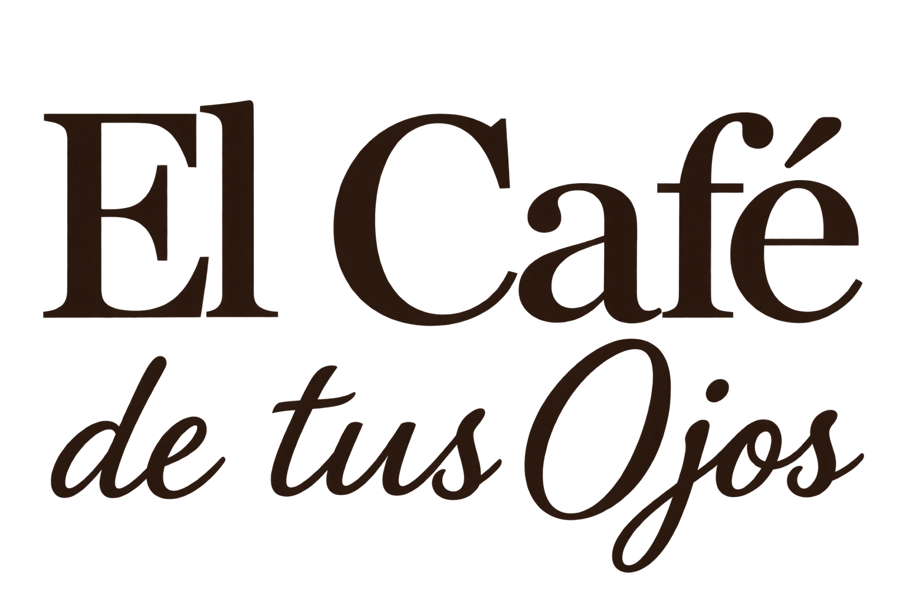
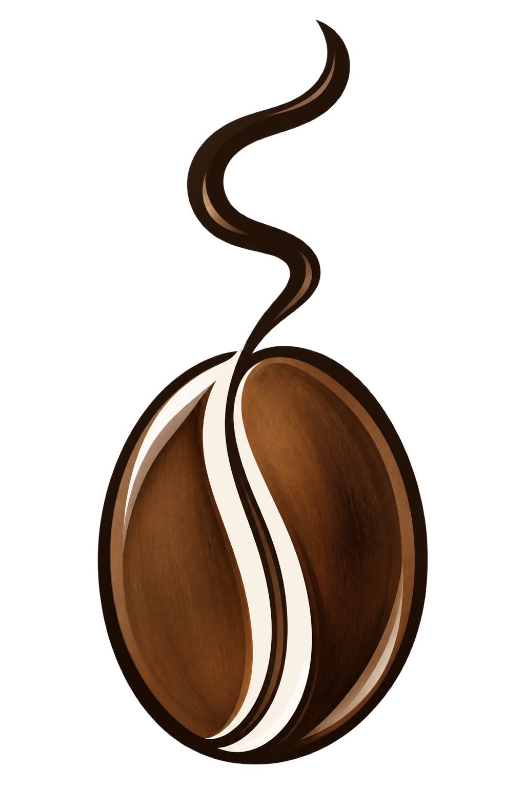
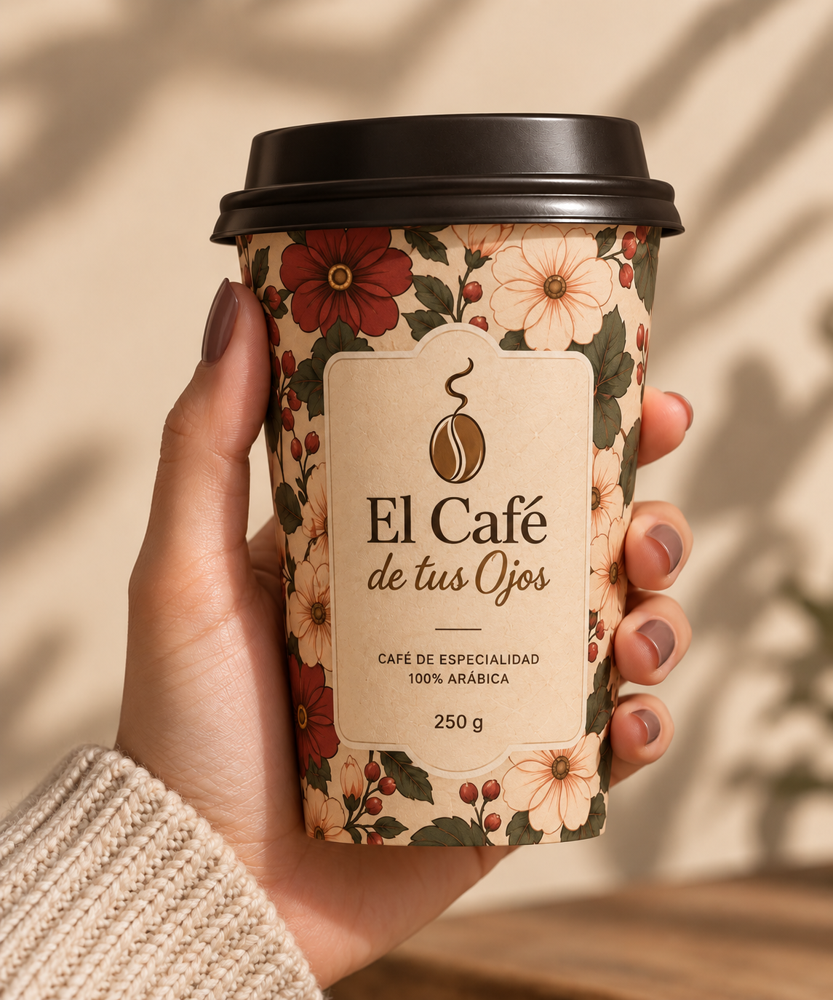

04 — Identidad de marca
Logo
e isotipo
Logotipo principal

Isotipo

Aplicación

El logotipo combina una tipografía serif editorial para “El Café”, aportando carácter y elegancia, con una tipografía manuscrita para “de tus Ojos”, que refuerza la cercanía y la emoción.
El isotipo, inspirado en un grano de café que se transforma en vapor, representa una mirada profunda, cálida y envolvente.